Giants of Evolution
Schedule and Readings
| Date | Leader / Snack Master | Subject | Reading | |
| August 31 | Introduction to the course | None |
||
| September 7 | 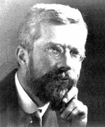 | Luke H. | R. A. Fisher | The Genetical Theory of Natural Selection (ch. 1-2)
|
| September 14 | 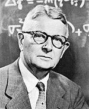 | Tyler H. | S. Wright |
Wade and Goodnight 1998 Evolution 52: 1537 This second paper is a part of a series, so here's some background! (not part of the assignment per se but probably good to read, these are important papers) Coyne et al. got everyone worked up: Coyne et al 1997 Evolution 51:643 Wade (above) and Peck responded: Peck et al 1998 Evolution 52: 1834 Coyne rebuttal to Wade and Peck: |
| September 21 | 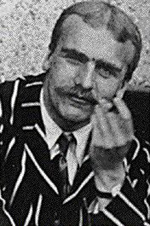 | Jeremy Y. | J. B. S. Haldane | Haldane 1948 J. Genetics 48: 277 |
| September 28 | Tom P. | T. G. Dobzhansky | Main reading: Dobzhansky 1937 Genetics and the origin of species, Chapter 5. Supplement: |
|
| October 5 | 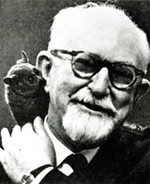 | Brian L. | G. G. Simpson | Simpson 1944 Tempo and Mode in Evolution Chapter 1 Supplement: |
| October 12 | 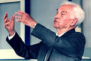 | Julie H. | E. Mayr | Mayr 1963 Animal Species and Evolution Chapters 1 and 2 |
| October 19 | 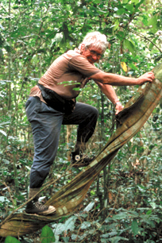 | Matt P. | W. D. Hamilton | Hamilton 1964 J Theoret Biol 7: 1 |
| October 26 | 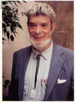 | Kayla H. | G. C. Williams | Williams 1966 Adaptation and Natural Selection, Chapter 4. |
| November 2 | 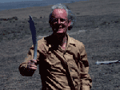 | Erin C. | J. Maynard-Smith | Maynard-Smith and Price 1973 Nature 246:15 |
| November 9 | Simone D. Justin B. |
S. J. Gould | Gould and Eldridge 1993 Nature 366: 223. | |
| November 16 | 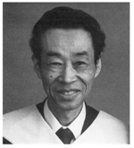 | Brice S. | M. Kimura | |
| November 23 | 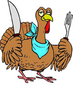 | Eat turkey | Thanksgiving | |
| November 30 | C. J. | L. Marguilis | Sagan 1967 J. Theoret. Biol. 14:225. | |
| December 7 | 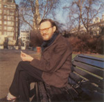 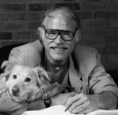 |
Smackdown | Felsenstein vs. Price vs. Sepkoski | Raup and Sepkoski 1982 Science 215: 1501. |